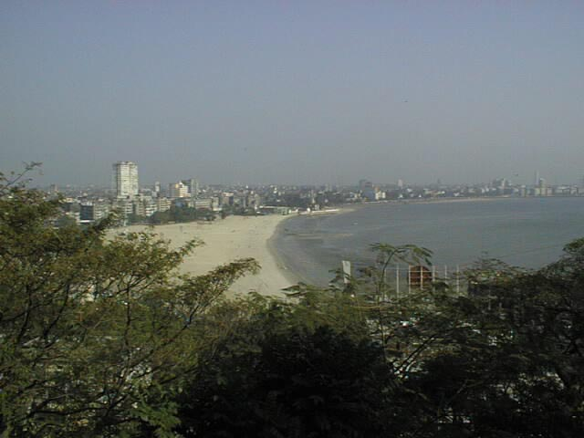
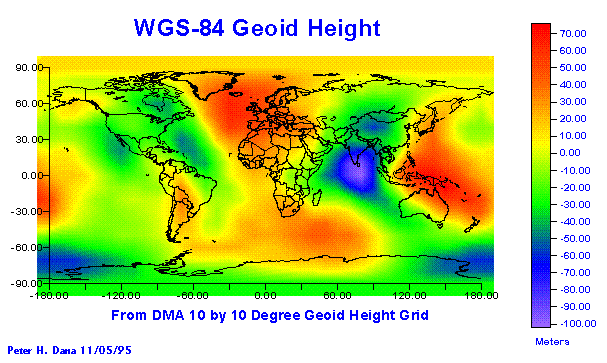
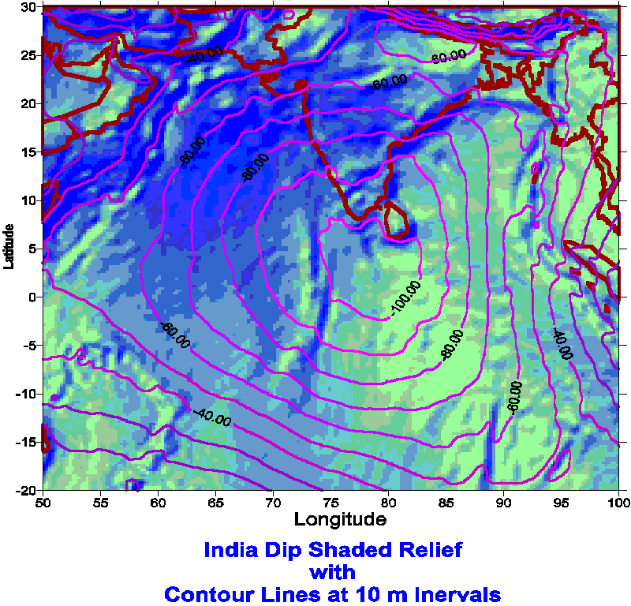
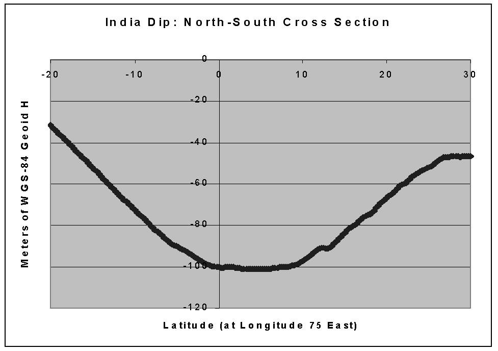
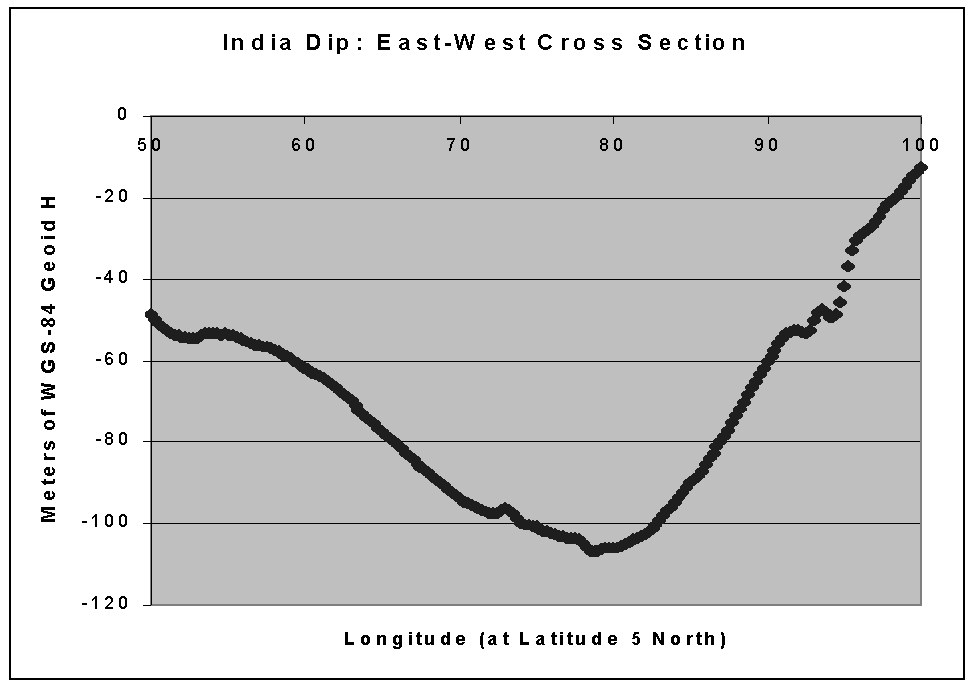

There will be no April Fools materials this year. The author of the
GPS Overview has been called away to help solve a GPS problem that may
have global positioning significance. Here is his preliminary report from
the field.

GPS Failures
Global Positioning System (GPS) receivers have been
known to take many minutes to acquire signals from time to time. Other
reports indicate that in many regions of the world, occasionally GPS receivers
will lose lock for no apparent reason.
Walter Depressions
Gravity field depressions, or geoid parabolic reflectors
may be part of the reason why.
Off the southern tip of the Indian subcontinent is a large parabolic
reflector formed by the WGS-84 geoid shape. The WGS-84 gravity field of
the earth is illustrated here:

The Indian Dip
The Indian Dip is just one of the large Walter Depressions
that occur around the globe. Others have been measured off the south-western
coast of the United States, near Bermuda, just off the northern coast
of Brazil, and west of New Plymouth, New Zealand (The Taranaki Depression).

A South to North Cross Section of the India Dip shows the parabolic nature of the Walter Depression

The West to East profile shows the parabolic shape in the other axis:

Uridiumb Solar Flashes
The current theory suggests that the Walter Depressions
cause a reflection of GPS satellite signals to focal points above the depressions.
These focal points are coincident with the orbital altitudes of the Low
Earth Orbiting (LEO) satellite system known as Uridiumb. These communications
satellites have been observed to reflect sunlight from their solar panels
that can be predicted and observed on earth. These solar Uridiumb Flash
events are reported worldwide:
http://www.assa.org.au/iridium.html
http://www-star.st-and.ac.uk/~fv/sag/iridium.htm
http://www.gsoc.dlr.de/satvis/
Uridiumb C/A Flashes
Predictions of reflections from Uridiumb satellites
passing through the focal points of Walter Depressions have coincided with
moments when GPS receivers have failed in the field.
A mechanism for these failures suggests that the
large size of the parabolic sea surface reflectors causes variable path
lengths for the satellite reflections as the satellites pass over the regions.
At specific moments in time the path length from the near side of the Walter
depression can differ from the path length from the far side by 299.79
kilometers.
These path length differences can cause GPS spread-spectrum
signals that would ordinarily be received as low level noise, to be exactly
one millisecond apart in propagation path time. This causes perfect auto-correlation
between a GPS satellite C/A code from the near side reflection and the
far side reflection. When coincident with Uridiumb passovers, correlated
de-spread GPS L1 carrier signals are beamed to points on earth. depending
on the incidence angle of the signals at the focal point and the attitude
of the Uridiumb solar panels, the beam can even be measured over land surfaces
near the Walter Depressions. It is surmised that these unexpectedly large
1.57542 GHz signals at the center of the 1MHz C/A code spread spectrum
signal normally seen by GPS receiver, simply swamps, or overloads the front
end (RF amplifiers) of the GPS receiver.
Plasma Bubbles or Walter Depressions/Uridiumb C/A Flashes?
Dr Jose Humberto Sobral of the Instituto Nacional
de Pesquisos Espacios (the Brazil
Space Agency) reported on Ionosphere Plasma Bubbles in the South American
Sector.
These can occur from October to March and effectively block radio signals
from satellites.
http://www.imca-int.com/seminar.htm
It may well be that "Plasma Bubbles" and other proposed causes of short-duration GPS receiver failures are nothing more than the occasional Walter Depression/Uridiumb C/A code Flash Events.
Initial Recommendations
Continuing research is necessary to assess the full
extent of the effects of Walter Depression/Uridiumb C/A Flash Events.